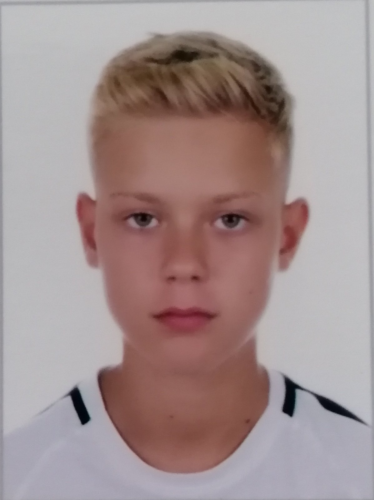
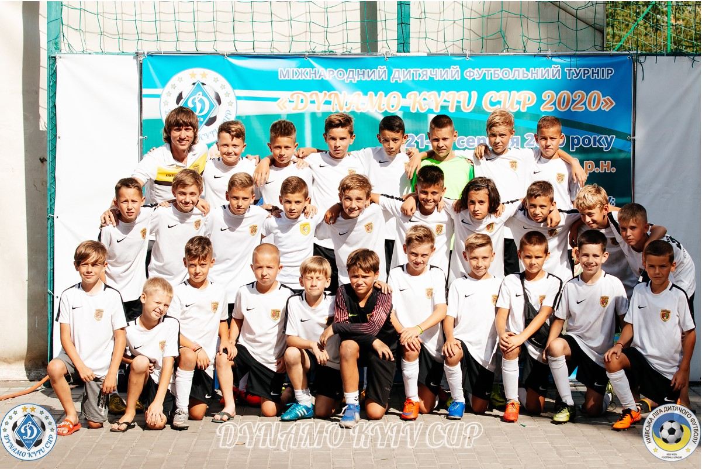

Повне ім’я: Главицький Андрій Олександрович
Дата народження: 22 травня 2010
Місце народженя: Україна, Чернівці
Національність: українець
Зріст: 156 см
Вага: 40 кг
Клуб: Буковина Чернівці(2016-2021)
Позиція: Центральний півзахисник
Ігровий номер(Number): 4
У 2016 році у віці 6 років Андрій почав свої виступи за КБУ ДЮСШ Буковина.
З 2016 по 2019 рік він виступав на позиції цетрального захисника.
У 2019 році Андрій почав грати на позиції центрально півзахисника.
Сильні сторони Андрія на позиції цетрального півзахисника є:
- Хороше бачення поля
- Хороший середній та довгий пас
- Сильний та точний дальній удар
- Хороший дриблінг
- Вміння грати головою як при обороні так і в атаці
- Сильна гра у відборі 1 в 1
За 5 років виступів у чемпіонаті ДЮФЛ та різноманітних міжобластних і міжнародних турнірах Андрій здобув значну кількість медалей та особистих винагород різного гатунку.
Найвизначнішою на даний момент є перемога на турнірі Dynamo Cup у 2020 році, де під керівництвом Андрія Гордея Буковина у фіналі перемогла у серії пенальті Київське Динамо.
В основний час гра завершилась з рахунком 1:1 і єдиний гол забив якраз Главицький Андрії.
Ігри за участі Андрія можна переглянути на Youtube каналі присвяченому виступам команди Буковина 2010 р.н.
